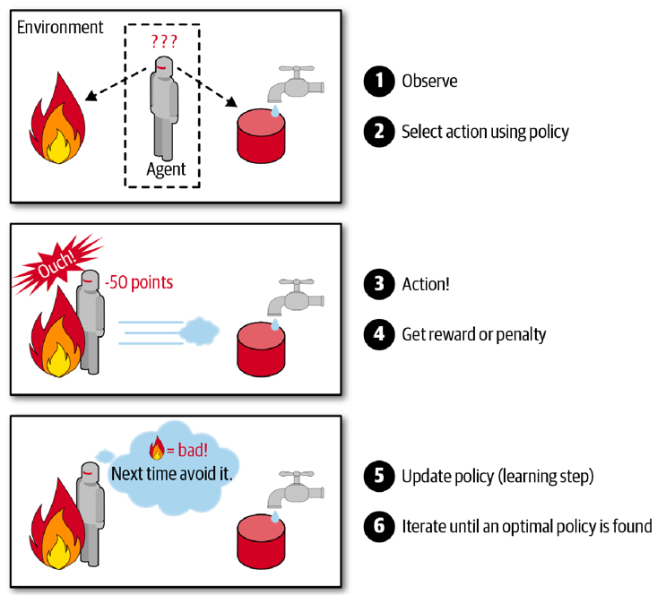
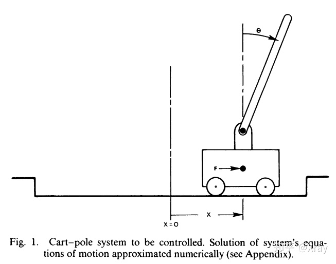
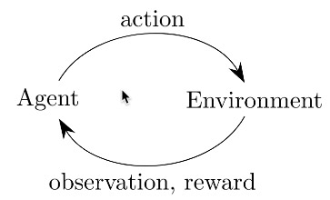
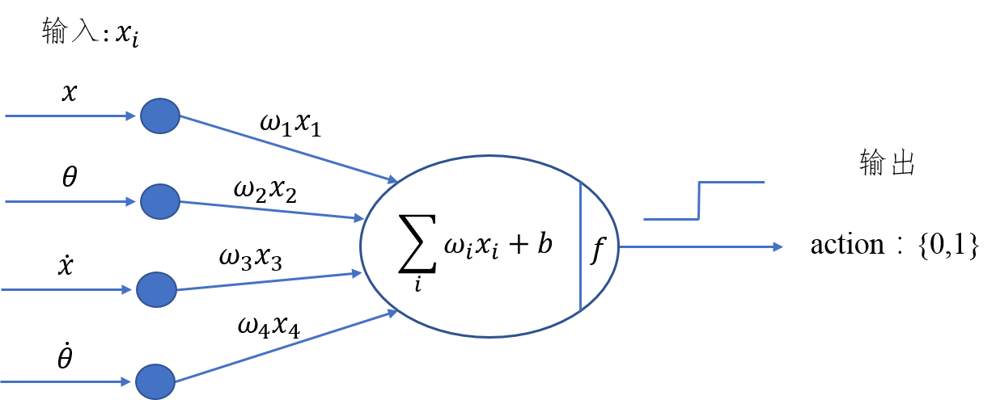
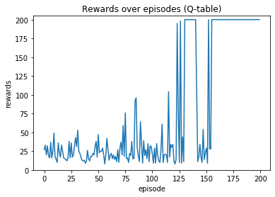

增強式學習(Reinforcement Learning)
Table of Contents
1. 增強式學習
使用代理人(agent)來對環境進行觀察、選擇與執行行動，藉由因行動獲取來自環境的回應（可能是rewards或penalties，奬勵或懲罰），然後自行學習最佳策略（policy），最後隨著時間取得最多的奬勵1。
典型的增強式學習是用來訓練機器人走路，DeepMind的AlphaGo也是應用增強式學習打敗柯潔（與柯潔比賽時AlphaGo關閉了學習機制，只應用之前已學習過的policy）。
對RL稍有了解的同學都知道，Exploration是一件很重要同時也很困難的事情。與其他機器學習範式相比，RL通常只知道某個動作的能得多少分，卻不知道該動作是不是最好的——這就是基於evaluate的強化學習與基於instruct的監督學習的根本區別。
正因如此，RL的本質決定了它極其需要Exploration，我們需要通過不斷地探索來發現更好的決策，或者至少證明當前的決策是最好的——所以Exploration-Exploitation成為了強化學習領域諸個Tradeoff中最出名的一個2。
最簡單的exploration方法就是epsilon-greedy，即設置一個探索率epsilon來平衡兩者的關係——在大部分時間裡採用現階段最優策略，在少部分時間裡實現探索。Epsilon-greedy很簡單，它根本不會考慮更加有針對性的探索機制，它僅僅是在純貪心的基礎上加入了一定機率的uniform噪聲——所以epsilon-greedy又被稱為Naive Exploration2。

Figure 1: Caption
2. Open AI Gym
OpenAI Gym 是一個提供許多測試環境的工具，讓大家有一個共同的環境可以測試自己的 RL 演算法，而不用花時間去搭建自己的測試環境。
2.1. module
於本機執行至少會用到以下兩個python module，若要在遠端主機或colab上執行則要再做其他額外設定。
pip install --user gym
pip install --user pyglet==1.5.11 (或是1.5.14)
3. CartPole
Gym上有許多可用工具，CartPole是其中較為簡單常見的一種，CartPole是一個桿子連在一個小車上，小車可以無摩擦的左右運動，桿子（倒立擺）一開始是豎直線向上的。小車通過左右運動使得桿子不倒。

Figure 2: Cart-pole system
3.1. 執行測試與環境變數
以下是一段最基本的測試程式
import gym # 建立執行環境 env = gym.make('CartPole-v0') # 將執行環境初始化 env.reset() for _ in range(100): env.render() # 隨機籨action_space中挑選下一動作(action)丟入step執行 env.step(env.action_space.sample()) env.close()
如下圖所示，增強式學習的核心就是: Agent採取Action，採取行動後，環境可能會被改變，而環境會給Agent一個Reward，讓Agent知道這Action好不好。其中： action有0或1兩種可能值，代表將將車子向左或向右控制。
 就Cartpole來說，action丟入環境執行後，可以得到幾個相關的環境資訊(由step function傳回)，這些變數可由以下方式取得
import gym # 建立執行環境 env = gym.make('CartPole-v0') # 將執行環境清空為預設值(從新開始) env.reset() rewards = 0 for _ in range(100): env.render() # 仍然隨機產生 action action = env.action_space.sample() # actionh去入環境執行，傳回環境資訊 observation, reward, done, info = env.step(action) # 輸出來查看一下 rewards += reward print(observation) if done: # 回合結束，可能柱子太傾斜或車子跑遠 # 若達到結束條件，就離開for loop print("Rewards: ", rewards) break env.close()
[-0.00943879 0.18031594 -0.0417659 -0.35468228] [-0.00583247 0.37600609 -0.04885955 -0.66023713] [ 0.00168765 0.57177271 -0.06206429 -0.96789561] [ 0.01312311 0.76767064 -0.0814222 -1.27941193] [ 0.02847652 0.57367526 -0.10701044 -1.01329459] [ 0.03995002 0.38013086 -0.12727633 -0.75603972] [ 0.04755264 0.18697153 -0.14239713 -0.50596262] [ 0.05129207 0.38378269 -0.15251638 -0.83991479] [ 0.05896772 0.58062118 -0.16931468 -1.17641133] [ 0.07058015 0.77748867 -0.1928429 -1.51703092] [ 0.08612992 0.58515093 -0.22318352 -1.29021731] Rewards: 11.0
如執行結果所示，雖然我們在程式中指定跑100次動作，但是更可能的是因為隨機動作而提前結束，而每一次的執行都會帶來不同的環境變數內容。
3.2. 重要環境變數
在 Gym 的仿真環境中，有運動空間 action_space 和觀測空間observation_space 兩個指標，程序中被定義爲 Space類型，用於描述有效的運動和觀測的格式和範圍。我們可以利用以下程式碼大致觀察一下這兩個Space:
import gym env = gym.make('CartPole-v0') print(env.action_space) print(env.observation_space)
Discrete(2) Box(-3.4028234663852886e+38, 3.4028234663852886e+38, (4,), float32)
由結果可以看出:
- action_space 是一個離散Discrete類型，從discrete.py源碼可知，範圍是一個{0,1,…,n-1} 長度爲 n 的非負整數集合，在CartPole-v0例子中，動作空間表示爲{0,1}。
- observation_space 是一個Box類型，從box.py源碼可知，表示一個 n 維的盒子，所以在上一節打印出來的observation是一個長度爲 4 的數組。數組中的每個元素都具有上下界。
3.2.1. Observation:
Type: Box(4)3
| Num | Observation | Min | Max |
|---|---|---|---|
| 0 | Cart Position | -4.8 | 4.8 |
| 1 | Cart Velocity | -Inf | Inf |
| 2 | Pole Angle | -0.418 rad (-24 deg) | 0.418 rad (24 deg) |
| 3 | Pole Angular Velocity | -Inf | Inf |
3.2.2. Actions: 動作空間是離散空間
Type: Discrete(2)
| Num | Action |
|---|---|
| 0 | Push cart to the left |
| 1 | Push cart to the right |
註：施加的力大小是固定的，但減小或增大的速度不是固定的，它取決於當時桿子與豎直方向的角度。角度不同，產生的速度和位移也不同。
3.2.3. Reward
Reward is 1 for every step taken, including the termination step. The threshold is 475 for v1. 每一步都給出1的獎勵，包括終止狀態。
3.2.4. 初始狀態:
初始狀態所有觀測值都從[-0.05, 0.05]中隨機取值。
3.2.5. 達到下列條件之一即結束一回合(片段):
- 桿子與豎直方向角度超過12度
- 小車位置距離中心超過2.4（小車中心超出畫面）
- 片段長度超過200連續100次
- 嘗試的平均獎勵大於等於195。
3.3. 分組作業:
上述程式只執行了一回合的模擬，請你修改上述程式，進行200回合的模擬，記錄每回合隨機運作的reward結果，並將結果畫成折線圖，x軸為回合數；y軸為每回合的reward，
4. 直覺反應的CartPole
前節程式以隨機方式來左右擺動車子，這很顯然不符合真實情境，再笨的人也會隨杆子的擺動來控制車子，例如：當杆子快往左傾，就把車子往左移，以下就是這種實作的程式碼：
import gym # 建立環境, 定義訓練的遊戲 env = gym.make('CartPole-v0') observation = env.reset() # 把柱子擺好 rewards = 0 for t in range(200): #env.render() #取得目前狀態 pos, v, ang, rot = observation # 進行自己設計的Action if ang < 0: action = 0 ##車往左移 else: action = 1 ## 車往右移 # 在環境中做出 action observation, reward, done, info = env.step(action) # 累加 reward rewards += reward if done: # 回合結束，可能柱子太傾斜或車子跑遠 print('Rewards: ', rewards) break env.close()
因為沒有在學習，趨勢肯定是平的。不過平均每回合的總 reward 明顯比隨機來得好，大概能撐兩倍時間。
Rewards: 51.0
4.1. 分組作業
上述程式只是簡單的依杆子角度來移動車子，你能否再想出更好的策略(即可以在結束前得到更多reward，最多到200)?請觀察observation的內容，傾全組之力想出最佳策略並實作出來，進行200次模擬，畫出模擬的rewards折線統計圖。
5. Hill Climbing Strategy 4
爲了能夠有效控制倒立擺首先應建立一個控制模型。明顯的，這個控制模型的輸入應該是當前倒立擺的狀態（observation）而輸出爲對當前狀態做出的決策動作（action）。從前面的知識我們瞭解到決定倒立擺狀態的observation是一個四維向量，包含小車位置（\(x\)）、杆子夾角（\(\theta\)）、小車速度（\(\dot{x}\)）及角變化率（\(\dot{\theta}\)），如果對這個向量求它的加權和，那麼就可以根據加權和值的符號來決定採取的動作（action），用sigmoid函數將這個問題轉化爲二分類問題，從而可以建立一個簡單的控制模型。其模型如下圖所示：
 上圖的實際功能與神經網絡有幾分相似，但比神經網絡要簡單得多。通過加入四個權值，我們可以通過改變權重值來改變決策（policy），即有加權和\[H_{sum} = w_1x+w_2\theta + w_3\dot{x} + w_4\dot\theta + b\]，若\(H_{sum}\)的符號爲正判定輸出爲1，否則爲0。
爬山算法的基本思路是每次迭代時給當前取得的最優權重加上一組隨機值，如果加上這組值使得有效控制倒立擺的持續時間變長了那麼就更新它爲最優權重，如果沒有得到改善就保持原來的值不變，直到迭代結束。在迭代過程中，模型的參數不斷得到優化，最終得到一組最優的權值作爲控制模型的解。
5.1. Source code
import numpy as np import gym def get_sum_reward_by_weights(env, weights): #測試不同權重的model所得到的奬勵 observation = env.reset() #重置狀態 rewards = 0 for t in range(1000): env.render() # 依目前權值針對當前狀態來選action # 原來的做法為: action = env.action_space.sample() action = 1 if np.dot(weights[:4], observation) + weights[4] >= 0 else 0 # 執行action, 取得下一步狀態 observation, reward, done, info = env.step(action) rewards += reward if done: print(t) break return rewards def get_best_result(): np.random.seed(10) best_reward = 0 # 初始最佳奬勵 best_weights = np.random.rand(5) # 初始權值為隨機值 for iter in range(1000): #迭代100次 cur_weights = None print("iteration:",iter) cur_weights = best_weights + np.random.normal(0, 0.1, 5) #在當前最佳權值加入隨機值 # cur_weights = np.random.rand(5) #隨機猜測 cur_sum_reward = get_sum_reward_by_weights(env, cur_weights) reward_rec.append(cur_sum_reward) #記錄用 if cur_sum_reward > best_reward: best_reward = cur_sum_reward best_weights = cur_weights if best_reward >= 200: print(iter,":",best_reward) print("best_weight",best_weights) break; env = gym.make("CartPole-v0") reward_rec = [] print(get_best_result()) # 輸出統計 import matplotlib.pyplot as plt plt.clf() x = range(1, len(reward_rec)+1) plt.plot(x, reward_rec) env.close()
爬山算法本質是一種局部擇優的方法，效率高但因爲不是全局搜索，所以結果可能不是最優。
6. Q-Learnin g
QLearning是強化學習算法中value-based的算法，Q即為Q（s,a）就是在某一時刻的 s 狀態下(s∈S)，採取 動作a (a∈A)動作能夠獲得收益的期望，環境會根據agent的動作反饋相應的回報reward r，所以算法的主要思想就是將State與Action構建成一張Q-table來存儲Q值，然後根據Q值來選取能夠獲得最大的收益的動作5。
一個 Q-learning 非常簡單的實現法複是用一個 model 來 approximate Q-value function，並藉由下面的 update rule 來訓練這個 model： \[Q(S_t, a_t) = Q(s_t, a_t) + \alpha(R_{t+1} + \gamma\max_aQ(s_{s_t+1},a)-Q(s_t,a_t))\] Q-table 是用 lookup table 來 approximate Q-value function，並用 Q-learning 訓練的一個方法。這個 lookup table 會將每個 state-action pair (s, a) 對應到 approximation Q(s, a)，一開始 table 裡的 Q-value 隨機設置，並在訓練過程中更新這些 Q-value。所以我們其實沒有在訓練一個 model 更新參數讓預測數值更接近 Q-value，而是直接用一個 table 記錄這些值並更新。
另外我們的 state 是連續值，這樣會有無限多個可能的 state-action pair，因此我們要 discretize 這些值才能建立一個 lookup table。
例如實作中我們把 state 的 4 個 feature (position, velocity, angle, rotation rate) 分別 discretize 成 (1, 1, 6, 3) 個 bucket，6 個 bucket 就代表 angle 的範圍 [-0.5, 0.5] 被切成 6 個區間，區間中的值都對應到相同的 discrete value。
6.1. Algorithms
 在更新 Q table 時，計算 reward 不只包含採取 action \(a\)獲得的 reward \(r\)r，還包含 \(\gamma max_{a^{'}}Q(s^{'},q^{'})\)。這個概念是，agent 不僅僅看當下採取的行動帶來的好處，他也會估計到達下一個 state \(s^{'}\) 後，最多可以有多少好處（因為在\(s^{'}\)也可以採取各種 action）。
換句話說，這個 agent 不是一個目光如豆的 agent，他會考慮未來。因為加上了\(\gamma max_{a^{'}}Q(s^{'},q^{'})\)(當然\(\gamma\)不能是 0)，讓我們的 agent 從 會立刻吃掉棉花糖的小朋友，進化成可以晚一點再吃多一點棉花糖的小朋友，是不是很有趣呢！
在更新 Q table 時，計算 reward 不只包含採取 action \(a\)獲得的 reward \(r\)r，還包含 \(\gamma max_{a^{'}}Q(s^{'},q^{'})\)。這個概念是，agent 不僅僅看當下採取的行動帶來的好處，他也會估計到達下一個 state \(s^{'}\) 後，最多可以有多少好處（因為在\(s^{'}\)也可以採取各種 action）。
換句話說，這個 agent 不是一個目光如豆的 agent，他會考慮未來。因為加上了\(\gamma max_{a^{'}}Q(s^{'},q^{'})\)(當然\(\gamma\)不能是 0)，讓我們的 agent 從 會立刻吃掉棉花糖的小朋友，進化成可以晚一點再吃多一點棉花糖的小朋友，是不是很有趣呢！
6.2. Q-Table
一個 Q-learning 非常簡單的實現法。複習一下我們在前篇提到 Q-learning，是用一個 model 來 approximate Q-value function，並藉由下面的 update rule 來訓練這個 model： \[ Q(s_t,a_t) = Q(s_t,a_t) + \alpha(R_{t+1}) + \gamma \max_{a} Q(s_{t+1}, - Q(s_t,a_t)) \] Q-table 是用 lookup table 來 approximate Q-value function，並用 Q-learning 訓練的一個方法。這個 lookup table 會將每個 state-action pair (s, a) 對應到 approximation Q(s, a)，一開始 table 裡的 Q-value 隨機設置，並在訓練過程中更新這些 Q-value。所以我們其實沒有在訓練一個 model 更新參數讓預測數值更接近 Q-value，而是直接用一個 table 記錄這些值並更新。
另外我們的 state 是連續值，這樣會有無限多個可能的 state-action pair，因此我們要 discretize 這些值才能建立一個 lookup table。
例如實作中我們把 state 的 4 個 feature (position, velocity, angle, rotation rate) 分別 discretize 成 (1, 1, 6, 3) 個 bucket，6 個 bucket 就代表 angle 的範圍 [-0.5, 0.5] 被切成 6 個區間，區間中的值都對應到相同的 discrete value。
整個 discretization 大概是這樣：
# state bucket 設定 n_buckets = (1, 1, 6, 3) # action 已經是 discrete value n_actions = env.action_space.n # 建立 Q-table q_table = np.zeros(n_buckets + (n_actions,)) # 設定好每個 state feature 的上下界 state_bounds = list(zip(env.observation_space.low, env.observation_space.high)) state_bounds[1] = [-0.5, 0.5] state_bounds[3] = [-math.radians(50), math.radians(50)] # 將 env 給的 state 轉換成 discretized state def get_state(observation, n_buckets, state_bounds): state = [0] * len(observation) for i, s in enumerate(observation): # 每個 feature 上界、下界 l, u = state_bounds[i][0], state_bounds[i][1] if s <= l: # 低於下界屬於第 1 個 bucket state[i] = 0 elif s >= u: # 高於下界屬於最後一個 bucket state[i] = n_buckets[i] - 1 else: # 其他看你在哪個區間，決定你在哪個 bucket state[i] = int(((s - l) / (u - l)) * n_buckets[i]) return tuple(state)
state_bounds初始內容為
[(-4.8, 4.8), [-0.5, 0.5], (-0.41887903, 0.41887903), [-0.8726646259971648, 0.8726646259971648]]
q_table為(1, 1, 6, 3, 2)的ndarray，初始內容為
array([[[[[0., 0.], [0., 0.], [0., 0.]], [[0., 0.], [0., 0.], [0., 0.]], [[0., 0.], [0., 0.], [0., 0.]], [[0., 0.], [0., 0.], [0., 0.]], [[0., 0.], [0., 0.], [0., 0.]], [[0., 0.], [0., 0.], [0., 0.]]]]])
再來是\(\epsilon-greedy\)的使用，選擇 action 時，有\(\epsilon\)的機率隨機選擇以增加 exploration，其他時間照著現有 policy 選擇：
def choose_action(state, q_table, action_space, epsilon): if np.random.random_sample() < epsilon: # 隨機 return action_space.sample() else: # 根據 Q-table 選擇最大 Q-value 的 action return np.argmax(q_table[state])
最後就是做出 action 收集到 observation 和 reward 後，就可以 update Q-table：
# 算出下個 state next_state = get_state(observation, n_buckets, state_bounds) # Q-learning q_next_max = np.amax(q_table[next_state]) q_table[state + (action,)] += lr * (reward + gamma * q_next_max - q_table[state + (action,)]) # Transition 到下個 state state = next_state
剩下就跟前面的框架差不多了。實作中，還另外加了一些方法讓訓練成果更好，例如因為訓練後期有比較好的 policy，讓 https://chart.googleapis.com/chart?cht=tx&chl=%5Cepsilon 隨著訓練降低以減少 exploration，以及讓 learning rate 降低使訓練能收斂。
get_epsilon = lambda i: max(0.01, min(1, 1.0 - math.log10((i+1)/25))) get_lr = lambda i: max(0.01, min(0.5, 1.0 - math.log10((i+1)/25))) # 每回合更新 epsilon 和 lr epsilon = get_epsilon(i_episode) lr = get_lr(i_episode)
成果

7. 增強式學習有多強6
我們可以使用強化學習來訓練圍棋機器人，知名的Alpha Go 就是基於強化學習來打敗人類的! 又或者學習如何玩超級馬力歐，透過一次又一次的死亡，Agent會慢慢地學習什麼時間點該跳躍閃避怪物，或者殺掉怪物。
那麼強化學習無敵了嗎?當然不是的，強化學習需要大量的訓練，如果要在電玩遊戲中贏過人類，需要的禎數可能要很高，且例如射擊遊戲需要超高的反應速度，目前的強化學習可能還無法應付。 又或者自動駕駛，假設車子已經能完美的沿著路線前進了，且能應對紅綠燈等狀況，但如果因為某些原因，影像辨識誤把紅燈當成了綠燈，這樣可能會導致嚴重的事故。
強化學習是很有趣的，但可能不是這麼萬用，但在一些領域中，可以達到超過人類水準的表現!
Footnotes:
Hands-On Machine Learning with Scikit-Learn: Aurelien Geron